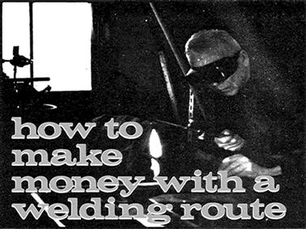
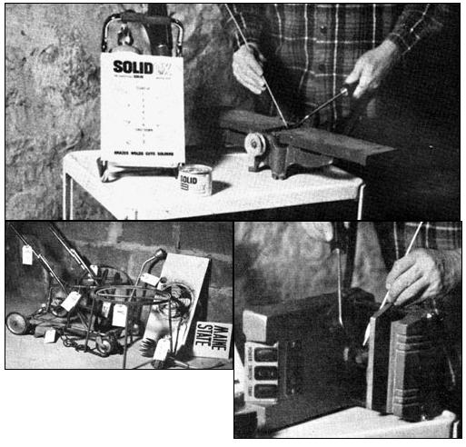
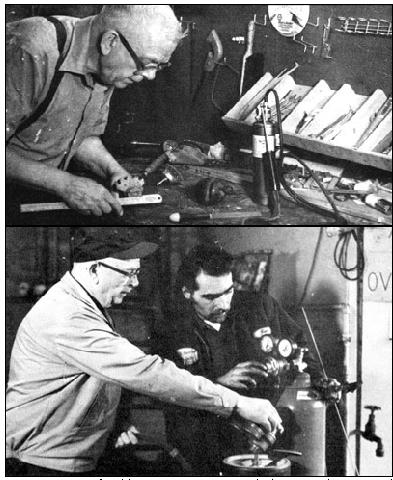

Up in Maine last summer I started a welding route and made a pocketful of money. The trade was easy, quickly learned and much in demand . . . every other home seemed to have a couple of articles for me to put back into service. Now, while I spend the winter at my teaching job in New York State, I'm waiting eagerly for next summer and another season of my new sideline.
I acquired this skill in the first place because I couldn't get an old wheel hoe welded . . . and decided to stop looking for service and do the repair myself. For $39.95 I bought a UL-approved Solidox welding set sold by Montgomery Ward for use on small home articles. After some practice with scraps, I brazed the hoe frame with no trouble at all.
My introduction, to the money end of welding came later, when I bought a can of flux at a coastal hardware store. "Don't know who you are," spoke up Mr. Lewis, the owner, "but if you're interested, I have some small boat chains and other things out back that need welding." I accepted the offer and in three days had the items back in good repair (except for a pulley and a bracket to a washing machine motor, both too much for the Solidox to handle).
Since it turned out that Mr. Lewis was already accepting lawn mowers and saws to be held for a mechanic who came by once a week, I asked him to collect damaged metal items for me in the same way. "People around here need something like this," he agreed, and his store became my first "drop".
I knew, of course, that my little home welder wouldn't be adequate for commercial work. Since the money possibilities of this trade looked so good, I decided to go all the way with equipment and training.
Accordingly, I began spending afternoons (at $10.00 a session) with a Mr. Warner who owned a shop near Bangor. He started me off checking flames, testing metals and controlling torch pressures . . . and I soon found out why welding may not be for everyone. It's necessary to study and practice for many hours to get the right flames, to avoid burning thin metals and warping thick pieces. And not only the quality of the work but its neat appearance is important in getting return jobs.
Still, I made progress . . . and I didn't lack for practice material, since folks started dropping off broken items when word got around that I was doing repairs. On each trip to Bangor I took along a couple of articles to mend under the expert eye of Mr. Warner or his son. Meanwhile, my instructor got together for me a set of brass valves, regulators, whips (hoses), blow pipes and other gear for less than $100.
I got further valuable help from a visiting Navyman who came by to have a slashed fender brazed. When he noticed my slow work, he smiled and offered advice. "That's my line of business," he told me. "If you just hold the torch more to the side and then run the flame along the upper surface it will heat more evenly." The same man dropped by several more evenings to chat and lend a hand with some of the harder jobs.
I also found books a big help in learning my new trade. The first text I bought was R.H. Cooley's Complete Metalworking Manua l ($10.00 from Arco Publishing Co. or from MOTHER'S Bookshelf). Chapters 14 and 15, which telescope the welding process into 21 pages, are very useful. Later, I ordered a copy of Introductory Welding Metallurgy, $5.00 from the American Welding Society, 2501 N.E. Seventh Avenue, Miami, Florida 33125.
Looking back, I believe that sound planning was as important to my success as learning the welding process . . . and here, too, reading can be helpful. One good guide is the pamphlet Starting and Managing a Home Business by Ralph Metcalf, available for 750 from the Superintendent of Documents, Government Printing Office, Washington, D.C. 20402.
Since I intended to pick up work on a regular basis from a number of prearranged collection points, my first step in organizing the business was to map out a route that would save travel. My wife and I drove around my prospective territory to get a good idea of the kind of areas I'd be working in, and found that the settlements were made up of farms and summer cottages.
I then visited each community on my list-nine towns and villages, all within 20 miles of my home-and checked to verify that no other welding service was available. If the coast was clear, I went after sponsors. This was really a matter of making friendly contacts . . . so, whenever I entered a settlement, I figured out several ways to break the ice. In a diner, for instance, I ordered a very unusual sandwich. That brought on a discussion which I turned to the local schools and crops, and then to the subject of finding a collection point. Another time I noticed in a drugstore a poster advertising a coming drag race. After a few words about local drivers I moved on to my own topic of possible drops.
Incidentally, I found that collection points were easier to get when I began tossing around a few welding terms such as "flux", "spelter" and "brazing". An air of familiarity with many angles of the field helps to give folks confidence.
Two days of scouting brought me all the contacts I needed. I ran into a couple of setbacks, of course: One resort town had to be scratched because of a bicycle shop that did welding, and two agents that I thought were signed up called later and backed off. Also, not all the people I approached were equally friendly. ("I know you're an out-of-stater by your voice," a farm implement dealer shouted at me. "Get moving along!")
Other local businessmen, though, met me more than halfway. The operator of a just-opened filling station signed on before I could explain all the conditions. "Ought to bring in some gas business too," he said. And a boatyard owner loaded a damaged outboard into my station wagon before we talked of terms at all. "Never mind the cost," he mumbled. "And yes, I'll collect for you. But get this done so I can pick it up myself by Wednesday."
My "partners" were all satisfied with a 20 percent commission-one grocer even offered to forgo his share-and I made my first pickups the Saturday after Mr. Warner, my welding instructor, turned me loose. Thereafter I covered the route weekly, mostly to iron out problems . . . but next year once every two weeks will be the plan.
Things went well and I lost only two drops during the summer, while gaining four more. One of my new agents, a retired mailman, was starting a swap shop and I did a lot of welding for him.
I let people know about my service by means of newspaper ads, and by having a boy or girl in each town distribute handbills on goldenrod stock. Then my wife made up a bundle of posters-red letters on gray-for store windows and drops. (Later I also found a place to get a batch of claim checks, which I divided among my collectors.)
"I think about $3.00 would be a good minimum," Me. Warner had suggested when I talked about pricing my work. "And you could telephone owners the evening after pickups to give estimates on larger jobs." This was the system I worked on all summer, with only two misunderstandings.
Naturally, a beginner like me had to make a few mistakes. One of them was promising work much too fast. When I started my home business the neighbors brought in a lot of jobs that had been building up . . . but I learned to schedule sensible finish dates without losing customers.
Another half dozen or so errors arose from misreading of instructions. Once I cut an old water tank in two pieces crosswise, and then discovered that the lady who owned it wanted it split lengthwise, for flowerbeds. Another time . . . "I told you I wanted a stand welded onto this spotlight," a retired game warden thundered. I had mistakenly attached a handle.
A number of unusual situations came up along With the ordinary jobs, and I found that I could keep the friends I'd made by being flexible and fitting into the situation.
For example: "I hear you do welding," came over the telephone one wet August evening, "I want you to go to the Eternal Rest Cemetery to repair an ornamental iron rose." Directions followed. The Solidox proved perfect for work on the delicate tracery of metal, and the woman cheerfully handed me $10.00 for two short hours of work.
Then, too, there's always the possibility of barter transactions. I once found myself welding bronze letters back into place over the entrance to a Little League park. My pay? Four tickets.
I also broadened the scope of my service slightly to meet the needs of my customers. "I know this isn't a welding job," a man explained, stopping me on the road, "but I need this axe sharpened to chop down a leaning cedar." I found that other people were leaving dull articles along with the damaged items to be welded . . . so I ordered an airmailed copy of Scissors Sam Says Be Sharp ($1.50 from MOTHER'S Bookshelf) and Harry Walton's Home and Workshop Guide to Sharpening ($3.00 from Harper & Row, 10 E. 53rd Street, New York, N.Y. 10022) and changed my newspaper ad to include sharpening and grinding.
Meanwhile, of course, practice was increasing my skill as a welder. After my second pickup I spent another session with Mr. Warner's son to master some points I had noticed about several of the jobs I'd collected. Next year I'll be expert enough to go out on the "road to weld tractor rods, cracked furnaces and farm equipment.
It was a profitable summer: Before the last pickup my wife went over the books and figured I was making over $3.00 per hour. And the $200 or so we laid out for equipment and for my training will all be to the good next season.
My own experience convinces me that welding is a first-rate home business opportunity . . . especially now, when inflation is causing so many of us to think "fix it" instead of "toss it". ("For years I've intended to have this step stool repaired," a summer visitor said when I stopped by. "Now, please do mend it for me.") And-in view of the trouble I had trying to get my wheel hoe put in order-I believe a newcomer might find very little competition in his own area, even with the top pay welders are getting. Think it over: Could welding bring in that extra money you've been looking for?
Henry Farr first sent this article to MOTHER about a year ago. Now, with another season of welding behind him, he has a few additional thoughts on his vacation business.
I had a good summer . . . a lot easier than the first one, since the business was already established. Two of my pickup points had to be dropped (one collector was tired of being involved, the other had brought in too little work to keep me going), but I added a new 16-mile subroute that paid well. In the end I didn't bother to go into the field for jobs, since I had enough to do as it was.
The price of materials has risen about 7 to 9 percent in the past year. A tank of oxygen, for instance, runs around $9.00 at present. The cost of copper rods went up temporarily but is now down to $2.00 per pound. I haven't raised my own charges . . . and I was right about one effect of inflation: People are more save-it conscious than ever.
Finally, a plug for the little Solidox I continue to find it just dandy for short jobs. It really produces a terrific heat.
|
 TOP: Henry Farr repairs a cracked jointer blade with his Solidox welding set. LEFT: An assortment of damaged articles awaits pick-up at a collection point. RIGHT: Accurate work means satisfied customers. Henry cleans an edge to get a better measurement. |
 TOP: One use of welding is to restore metal objects to their original profiles. Here Henry prepares to build up the low spots on a worn gear. BOTTOM: Correct gas pressures?as shown by the gauges on the tanks?are extremely important in oaxyacetylene wrok. |
 |